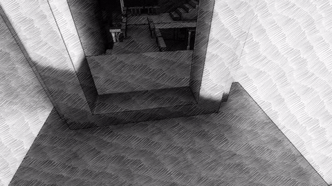

Non Euclidean Room
A downloadable game for Windows, macOS, and Linux
Non Euclidean Room is an exploration game in a strange land. How many time a room can be connected to itself ?
Your goal is to make a mental map of that room while finding cool visual spots. Then you can hope to escape.
Update : I just released a sequel, called "Fragments of Euclid", that you can find here : nusan.itch.io/fragments-of-euclid
Post-mortem, timelapse and glimpse into post-compo version : here
Tools : Unity 3D, Blender, Bosca Ceoil (music) and bfxr (sfx)
Made by NuSan in 48h for Ludum Dare 37

Download
Click download now to get access to the following files:


Comments
Log in with your itch.io account to leave a comment.
I loved the aesthetics of this Escher-esque game. <3 To figure out how all the rooms are connected was a puzzle challenge in itself, though the player just has to find the spots. :) Your whole work with the shader really payed out amazingly in my opinion, because it was an audiovisual delight! So let me congratulate you to the 34th place in the Ludum Dare 37, it was well deserved. It's been my pleasure to include your entry in one of our compilation articles about the jam as well as in the related showcase video, and of course I appreciated the sequel very much as well - this game was the reason why we started our "After Jam Party" format after all! <3 In there we take a look on the bigger post-jam-versions of some jam entries and how they changed. And yours was simply a great starting point! Thanks for all your hard work, dear Antoine; it's always lovely for me to play one of your games. Looking forward to future projects of you!
Best wishes,
Sebastian
Thank you a lot Sebastian for your kind words. Your work with game jam curator means a lot for small dev like me, and seeing my game worthy of an article always drive me forward and give me motivation. Game jams are also a huge part of how games evolve nowadays, I think, but it's often buried and invisible. So your work shine a light on all that world. I hope to bring you more interesting jam games in the future, but the result is never guaranteed, that is also one of the specificity of game jams ...
<3 You are very welcome, Antoine. And don't be too worried about your results in a game jam, because you're a very kind person as well and I'm just glad to see how you contribute to the jam culture! :)
There should not be any copyright on this game's music or the sequel.
Yeah, cool, it's fun but where's the non euclidean part? I mean I get it, teleportation, but I was excepecting gravity changes and imposible shapes made posible like in Escher's art.
All of that is in my following game, Fragments of Euclid that you can play here :
https://nusan.itch.io/fragments-of-euclid
Wow, I'd forgotten I'd played and did a video for this a while back. I thought the graphics style was really cool and it's defo got a lot of potential.
Great work devs
wobblyfootgamer
http://www.youtube.com/wobblyfootgamer
Thanks for the vidéo, I released a sequel some times ago, if you didn't play it. There is a lot more puzzles so I hope you will enjoy it: https://nusan.itch.io/fragments-of-euclid
Thanks for the Reply. I found Fragments of Euclidh earlier and I have just done Part1 which took me an hour. When it's uploaded I'll post a link Fragments of Euclid.
Great Games. Thank you and good luck
wobblyfootgamer
Hi, congrats ! great short game!. Going to play Fragments now :)
Incredible game! The transitions are smoother than Portal!
Thanks, if you liked the game, you should check out the project I did after, it's much more involved : https://nusan.itch.io/fragments-of-euclid
Realy unipue
Cool style!
Fantastic! keep on it, I want to play more games like this
Nice idea. I love the concept, specially because I'm a fan of Escher.
But it was very short!
Looks really cool!
This was interesting; you get money.
I would pay more for this if there were more levels & puzzles.
Thanks, I'm glad you liked it. I'm working on a sequel with several sections, puzzles, and a lot of new mechanics. I just released a video teaser you can check out : https://youtu.be/ariVKXSYXrY
Hallo,
nice game, I played it for 20 minutes, activated 8 "targets".
a) Is there a way to save progress?
b) Is there more to do (like finding an exit)?
Happy holidays,
Ingox
Hi, thanks for playing. There is an exit to find, but no way to save your progress. As it's a short game focusing on exploring, you can probably complete it again pretty fast. I plan to do another room, with real puzzle to be released early january.
Loved the game, very cool. It took me a while to get my bearings in order to find them all. I also loved the art style. Nice work!
Very cool, Euclidean geometry is very well done!